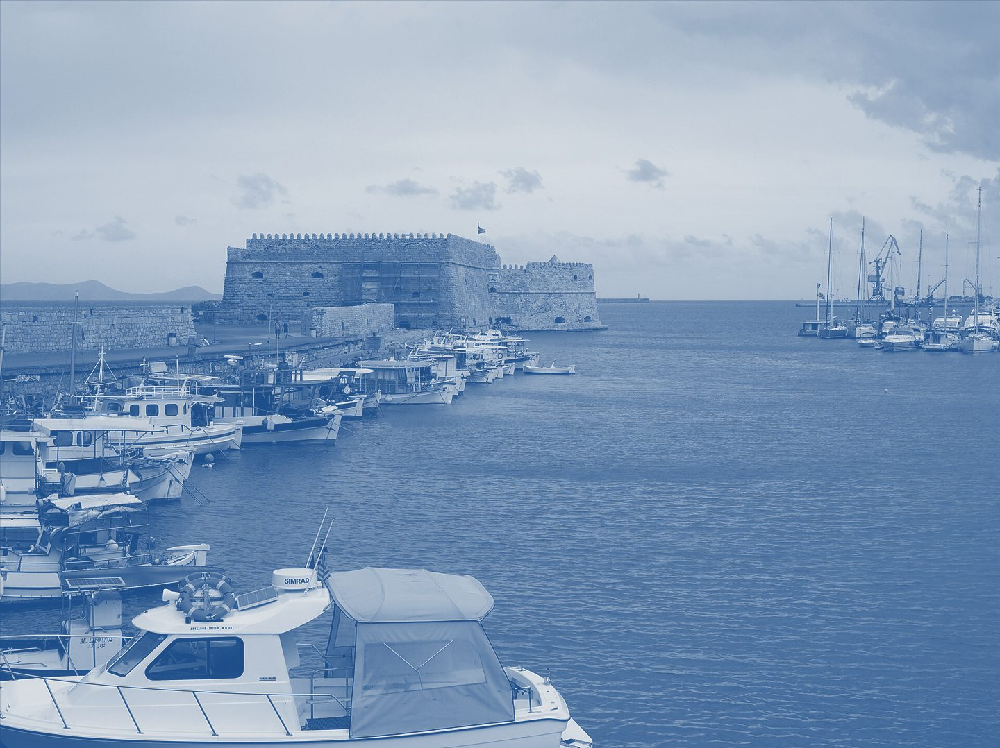
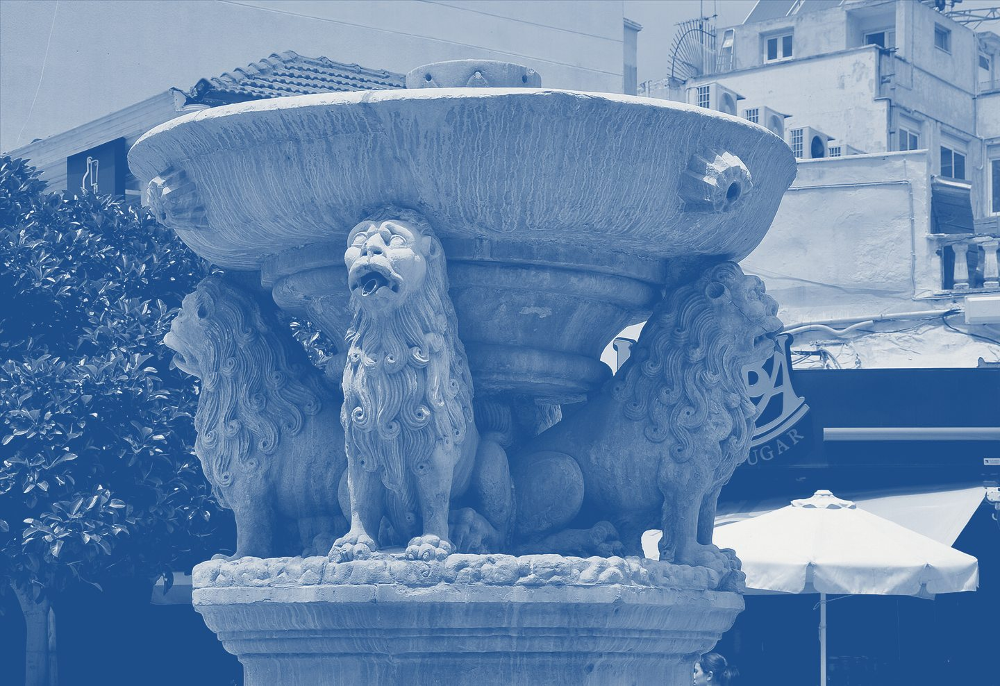
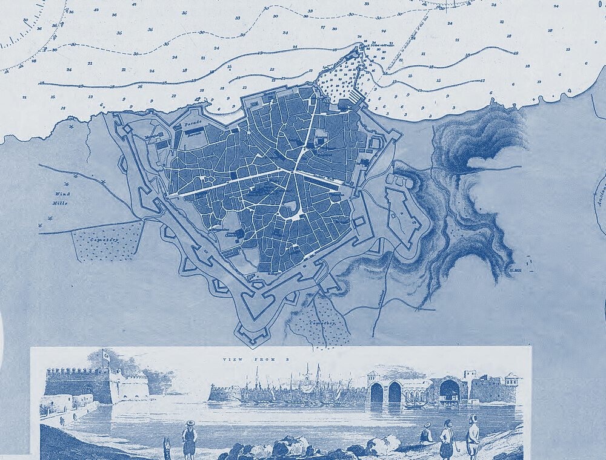

Αντώνης Παξιμαδάκης
Ψυχολόγος στο Ηράκλειο. Ατομική, ζεύγους και οικογενειακή θεραπεία, στο γραφείο ή online, στα ελληνικά και στα αγγλικά.
Λίγα λόγια για μένα
Είμαι ο Αντώνης Παξιμαδάκης, ψυχολόγος με άδεια άσκησης επαγγέλματος από τη Διεύθυνση Δημόσιας Υγείας της Περιφέρειας Κρήτης. Σπούδασα ψυχολογία στο Πανεπιστήμιο Νεάπολις Πάφου και έκανα μεταπτυχιακό στην Εφαρμοσμένη Αναπτυξιακή Ψυχολογία στο Ελληνικό Ανοικτό Πανεπιστήμιο. Έχω δουλέψει στο Κέντρο Ψυχικής Υγείας Ηρακλείου, σε νοσοκομεία και σε ιδιωτική πρακτική, με ενήλικες, εφήβους, ζευγάρια και οικογένειες. Πιστεύω ότι κάθε άνθρωπος αξίζει έναν χώρο όπου μπορεί να μιλήσει ελεύθερα, χωρίς να κριθεί. Δουλεύω με επιστημονικά τεκμηριωμένες μεθόδους, προσαρμοσμένες σε εσάς και στους στόχους σας, και συνεχίζω να εκπαιδεύομαι μέσα από εποπτεία. Οι συνεδρίες γίνονται στα ελληνικά ή στα αγγλικά, στο γραφείο ή online.
- 2024–2026
- MSc Εφαρμοσμένη Αναπτυξιακή Ψυχολογία, Ελληνικό Ανοικτό Πανεπιστήμιο
- 2024–2025
- Κέντρο Ψυχικής Υγείας Ηρακλείου
- 2023–2024
- Ιδιωτική πρακτική: ατομική, ζεύγους, οικογενειακή θεραπεία και έφηβοι με εθισμό στο διαδίκτυο
- 2017–2022
- BSc Ψυχολογία, Πανεπιστήμιο Νεάπολις Πάφου
Τέσσερις τρόποινα δουλέψουμε μαζί
Κάθε συνεδρία διαρκεί 50–60 λεπτά. Η πρώτη είναι 60 λεπτά: γνωριζόμαστε και ορίζουμε μαζί τους στόχους.
Κλείστε ραντεβού-
Ατομική θεραπεία
Εξερευνούμε σκέψεις, συναισθήματα και συμπεριφορές που σας περιορίζουν, για να κλείσει η απόσταση ανάμεσα σε αυτό που ζείτε και σε αυτό που θέλετε.
Ενήλικες · Έφηβοι · Ελληνικά ή αγγλικά
-
Θεραπεία ζεύγους
Δουλεύουμε την επικοινωνία, ξαναχτίζουμε την εμπιστοσύνη και τη σύνδεση με τον σύντροφό σας, σε ουδέτερο και ασφαλές πλαίσιο.
Επικοινωνία · Εμπιστοσύνη · Σύνδεση
-
Οικογενειακή θεραπεία
Αλλάζουμε μοτίβα επικοινωνίας που δυσκολεύουν, ενισχύουμε τους δεσμούς και φτιάχνουμε ένα σπίτι με αμοιβαίο σεβασμό.
Γονείς · Παιδιά · Έφηβοι
-
Online συνεδρίες
Μέσω ασφαλούς βιντεοκλήσης, για όσους έχουν λίγο χρόνο, μένουν μακριά ή δυσκολεύονται να μετακινηθούν.
Webex · Ήσυχος χώρος · Ακουστικά
Πώς ξεκινάμε
Δεν χρειάζεται να ξέρετε από πού να αρχίσετε. Αρκεί ένα μήνυμα ή ένα τηλεφώνημα· τα υπόλοιπα τα βρίσκουμε μαζί.
Μιλάμε
Μου στέλνετε αίτημα ή με καλείτε. Σας απαντώ για να βρούμε μέρα και ώρα.
Γνωριζόμαστε
Η πρώτη συνεδρία, 60 λεπτά: ακούω τι σας φέρνει και ορίζουμε μαζί στόχους.
Προχωράμε
Συνεδρίες 50–60 λεπτών, με ρυθμό που ταιριάζει σε εσάς και σε ό,τι ζείτε.
Τι λένε όσοι ήρθαν
Anika
Θεραπεία στα αγγλικά
“I was very happy to find a psychologist I could communicate with in English since I don’t speak Greek. Excellent listener and very easy to talk to.”
Ειρήνη
Ατομική θεραπεία
«Σε μια πολύ δύσκολη προσωπική φάση, ο Αντώνης με βοήθησε να ξεπεράσω συναισθήματα που δεν μου επέτρεπαν να συμφιλιωθώ με τον εαυτό μου.»
Γιάννης
Ατομική θεραπεία
«Η εμπειρία μου από τη θεραπεία ήταν πολύ καλή. Με βοήθησε να βγω από μια περίοδο κατάθλιψης και να βάλω ξανά στη ζωή μου πράγματα που μου δίνουν χαρά. Νιώθω ότι έχω βρει καλύτερη ισορροπία στην καθημερινότητά μου.»
Κόστος
Ατομική, ζεύγους, οικογενειακή ή online συνεδρία, 50–60 λεπτά.
Παίρνετε απόδειξη παροχής υπηρεσιών ψυχολόγου για το ασφαλιστικό σας ταμείο. Ακυρώσεις μέσα σε 24 ώρες ενδέχεται να χρεωθούν.
από 30€ανά συνεδρία
Κλείστε ραντεβούΦοιτητές και πολύτεκνοι
Μειωμένη τιμή για φοιτητές και πολύτεκνες οικογένειες. Ρωτήστε με χωρίς δισταγμό.
Ειδική τιμή
ΡωτήστεΕρωτήσεις
Πόσο διαρκεί η πρώτη συνεδρία;
60 λεπτά. Είναι αφιερωμένη στη γνωριμία μας, στο να καταλάβω τι σας απασχολεί και στο να ορίσουμε μαζί τους θεραπευτικούς στόχους.
Πόσο κοστίζει μια συνεδρία;
Η ατομική συνεδρία κοστίζει από 30€. Υπάρχουν ειδικές τιμές για φοιτητές και πολύτεκνες οικογένειες.
Καλύπτεται από ασφαλιστικά ταμεία;
Ορισμένα ταμεία καλύπτουν μέρος του κόστους ψυχοθεραπείας. Σας δίνω απόδειξη παροχής υπηρεσιών ψυχολόγου για να την υποβάλετε στον ασφαλιστή σας.
Πώς γίνονται οι online συνεδρίες;
Μέσω ασφαλούς πλατφόρμας βιντεοκλήσης (Webex). Χρειάζεστε μόνο έναν ήσυχο χώρο, σύνδεση στο διαδίκτυο και ακουστικά. Είναι εξίσου αποτελεσματικές με τις δια ζώσης.
Είναι εμπιστευτικές οι συνεδρίες;
Απολύτως. Τηρώ τον Κώδικα Δεοντολογίας του Συλλόγου Ελλήνων Ψυχολόγων και τον ΓΚΠΔ. Τίποτα από όσα λέτε δεν μοιράζεται με τρίτους.
Μπορούμε να μιλήσουμε στα αγγλικά;
Ναι. Οι συνεδρίες γίνονται στα ελληνικά ή στα αγγλικά, στο γραφείο ή online.
Κι αν χρειαστεί να ακυρώσω;
Ενημερώστε με όσο νωρίτερα μπορείτε. Ακυρώσεις μέσα σε 24 ώρες από το ραντεβού ενδέχεται να χρεωθούν.



Μεγάλου Αλεξάνδρου 154
Δευτέρα με Παρασκευή, 09:00–21:00
- Δευτέρα – Παρασκευή
- 09:00 – 21:00
- Σάββατο
- Κατόπιν συνεννόησης
- Κυριακή
- Κλειστά
71305 Ηράκλειο Κρήτης. Με το λεωφορείο: στάση Μεσαμπελιές, στη Μεγάλου Αλεξάνδρου.
Άνοιγμα στον χάρτη